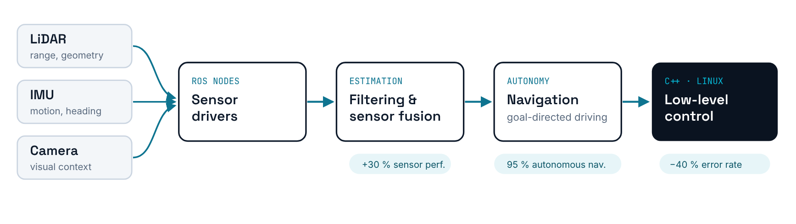

Autonomous sensor-fusion rover
A ROS-based mobile rover that fuses LiDAR, IMU and camera data for autonomous navigation, with the low-level control logic rewritten in C++ on Linux for real-time responsiveness.
95%autonomous navigation+30%sensor performance−40%error rate
Internal research project; code stays with Fraunhofer. Happy to walk through it in an interview.